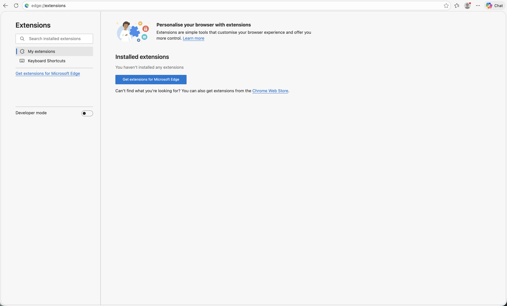
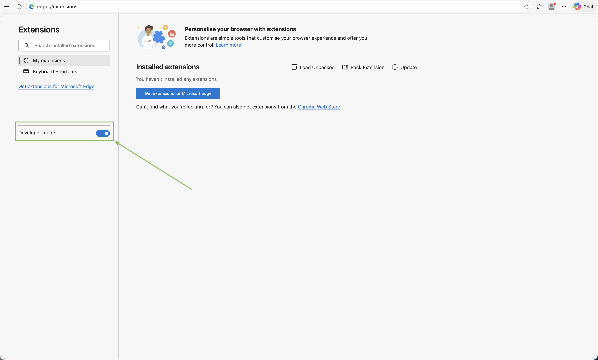
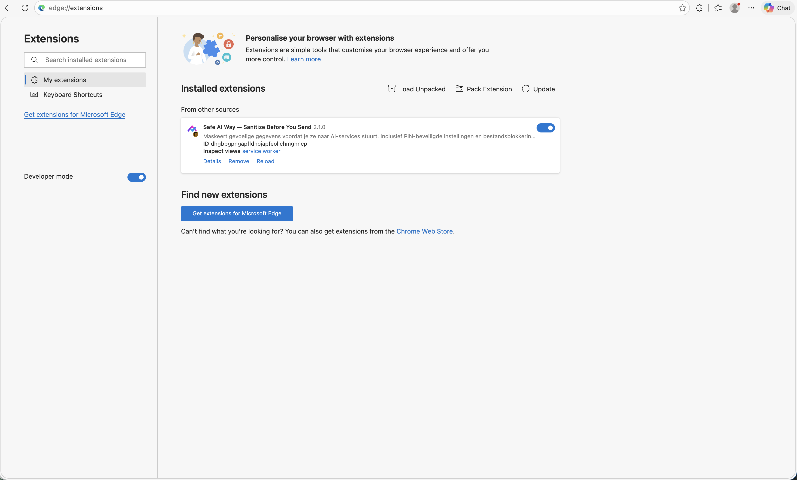
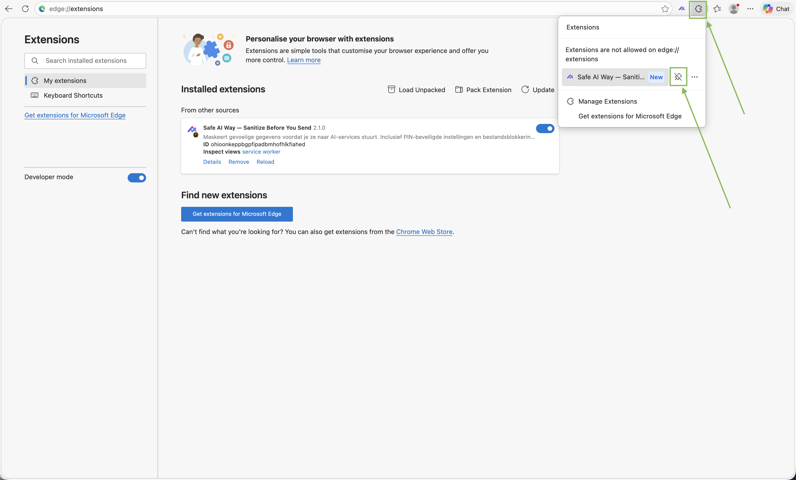

Installeer de extensie op Microsoft Edge
5 stappen, ongeveer 2 minuten. Geen account nodig.
Download het installatiebestand (.zip)-
Pak het ZIP-bestand uit
Open je Downloads-map en zoek
safe-ai-way-edge-v2.1.0.zip. Rechtsklik → Alles uitpakken… → kies bv. een map op je bureaublad genaamdsafe-ai-way.Belangrijk: niet de ZIP zelf gebruiken — Edge heeft de uitgepakte mapje nodig.

-
Open de extensies-pagina van Edge
Open Edge en typ in de adresbalk: edge://extensions
Of: klik op de drie puntjes rechtsboven → Uitbreidingen → Uitbreidingen beheren.

-
Schakel "Ontwikkelaarsmodus" aan
Onderaan de linkerkolom staat een schuifregelaar Ontwikkelaarsmodus. Zet die op AAN.
Hiermee mag Edge tijdelijk een extensie van buiten de Edge-store laden. Je kan dit later weer uitzetten.

-
Sleep de uitgepakte map op de pagina
Sleep de map
safe-ai-way(die je in stap 1 hebt aangemaakt) vanuit Verkenner rechtstreeks op de extensies-pagina in Edge.Alternatief: klik "Uitgepakte versie laden" bovenaan en selecteer de map.

-
Bevestig en pin de extensie
Klik "Extensie toevoegen" in de bevestigingsdialoog. Klik daarna op het puzzelstukje rechtsboven in Edge → pin het Safe AI Way-icoontje vast aan de werkbalk.

Werkt het?
- Het Safe AI Way-icoon staat rechtsboven in je Edge-werkbalk.
- Open chatgpt.com en typ in het invoerveld: "mijn telefoon is 0470 12 34 56".
- Het telefoonnummer wordt automatisch gemaskeerd vóór verzending.
- Klik op het Safe AI Way-icoon → je ziet de instellingenpopup verschijnen.
Iets niet zoals verwacht?
Edge zegt "Deze extensie komt van een onbekende bron"
Dit gebeurt als je het .crx-bestand probeert te installeren. Gebruik in plaats daarvan de uitgepakte map via stap 4 hierboven.
De "Uitgepakte versie laden"-knop is niet zichtbaar
Ontwikkelaarsmodus staat dan nog uit. Ga naar stap 3 en zet de schuifregelaar links onderaan op AAN.
De extensie verdwijnt na herstart van Edge
Edge toont een waarschuwing voor extensies in ontwikkelaarsmodus en kan ze tijdelijk uitschakelen. Klik op de waarschuwing en kies "Behouden", of activeer de extensie opnieuw via edge://extensions.
Op een Chromebook werkt deze methode niet
Chromebooks blokkeren extensies van buiten de Chrome Web Store. Spreek je leerkracht aan voor een alternatieve installatie of installeer thuis op een persoonlijke laptop.
Ik krijg een organisatiecode-vraag bij eerste activatie
De code wordt tijdens de demo door je leerkracht op het bord getoond. Plak hem in het invoerveld en klik op Activeren.